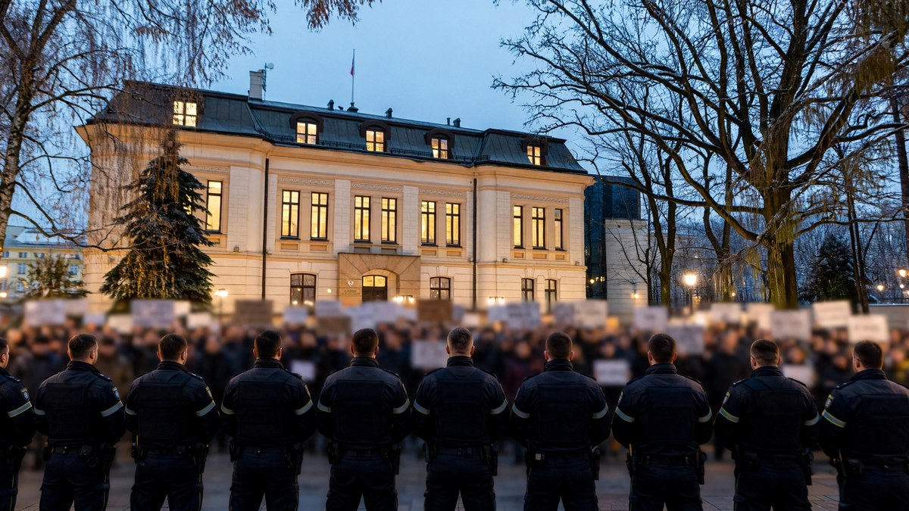

Poland top court crisis deepens as president cuts trip short
Poland's president cut short his Senegal trip and turned his plane back to Warsaw after the Constitutional Tribunal chief was suspended, as police secured the court area and protesters gathered outside.

Poland's president cut short a trip to Senegal on Friday and turned his plane back to Warsaw, after the head of the country's top court was suspended and police secured the area around the Constitutional Tribunal as protesters gathered outside.
Read More
The tribunal's website said its longest-serving judge, Anna Korwin-Piotrowska, had suspended the tribunal's president, Bogdan Swieczkowski, and that she was now in charge of the court. The tribunal's leadership disputed the move, saying Swieczkowski remained president and accusing those behind it of carrying out a coup.
Police deployed a large presence around the court in Warsaw. Police said three people were detained after some protesters breached the tribunal's fence and others threw objects at officers, and police said officers were acting within their authority to maintain public order.
President Karol Nawrocki said on social media that at a moment like this, the president must be in Poland, and that he was cutting short his flight to Senegal and returning. Politicians from the main opposition party, Law and Justice, accused the government of carrying out a de facto coup and undermining the independence of the judiciary.
Prime Minister Donald Tusk said restoring the rule of law was his government's obligation, and that after years of lawlessness under the previous government, the process was difficult and painful and required decisive action. The dispute over the Constitutional Tribunal has run for years, with the current government and its opponents disagreeing over judicial appointments and over whether the court's judges were lawfully appointed.
What People Say
And we’re back to 1981
Only a week ago we were all being told to be like Poland.... 🙄
The people of Poland do not want to be like Europe with censorship of thought. They want to continue free.
Sooooo… they’re one of the safest countries in Europe, and people have an issue with that? Make it make sense
I wonder if Russia will take advantage of this?
 UN General Assembly votes 130-17 against US Cuba embargo
UN General Assembly votes 130-17 against US Cuba embargo Britain gives extra £10 billion support to Ukraine
Britain gives extra £10 billion support to Ukraine Machado returns to Venezuela after nearly a year away
Machado returns to Venezuela after nearly a year away